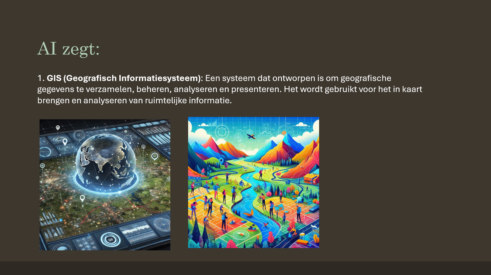
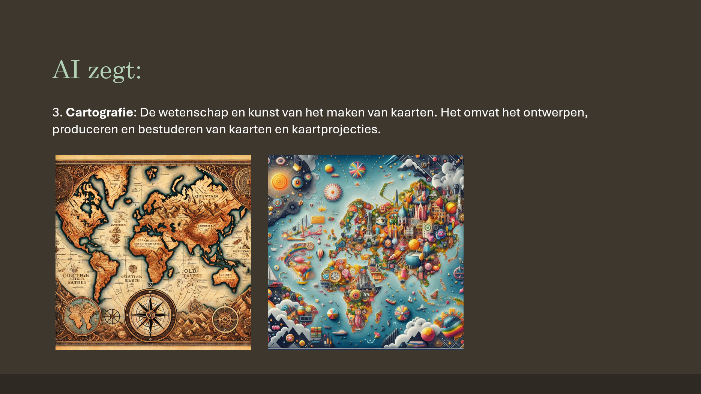

Geodesign
Les 1: Cartografie en kaarten
Tijdens het vak zijn we dieper in gegaan op de betekenis kaarten maken, het is een combinatie van data, visualisatie en locaties. We bespraken met onze groep hoe kaarten door de geschiedenis heen zijn geëvolueerd, van de Babylonische kaart (600 v.Chr. of zelfs 2300 v.Chr.) tot moderne GIS-systemen, en hoe mensen ze interpreteren op basis van hun eigen ervaringen en context. Verder, hebben we ook de begrippen in het vakgebied van Geodesign onderzocht.
Onze taak was om als individu termen verwant met Geodesign op te zoeken en te laten visualiseren door kunstmatige intelligentie. Ik moest reflecteren op definities van geodesign en hoe kunstmatige intelligentie daar tegenaan keek, hoe kaarten zowel een symbolische als praktische rol spelen, en hoe technologie, kunst en wetenschap hierin samenkomen. Dit wilde ik vormgeven in een tijdlijn, omdat ik in dat deel van de les het meest geintresseerd was en dus het meest van herinnerde.
Ik begon met het opzoeken van historische kaarten, zoals de Babylonische kaart, die een ethnocentrisch wereldbeeld toont met Babylon als middelpunt. Dit koppelde ik aan Bijbelse en seculiere contexten, zoals de rivieren Tigris en Eufraat. Vervolgens heb ik geprobeerd de 'main-take-away' en dus de geschiedenis van kaarten te visualiseren: van mythe en versiering in Egypte en de Middeleeuwen (bijv. de Hereford Mappae Mundi), naar wetenschappelijke precisie met navigatiegereedschappen en pioniers als Cassini, tot de digitale revolutie met GIS en satellietbeelden. In deze foto hiernaast zie je de periodes uitgelicht, met aandacht voor de combinatie van kunst, wetenschap en technologie.
Het resultaat was een tijdlijn die de ontwikkeling van kaarten maken helder in beeld bracht. Het liet zien hoe kaarten ooit symbolisch waren, zoals de Babylonische kaart, en later geografisch accuraat werden door geodesie en digitale tools. Wat tot mij spreekt, omdat wij als Geo, media en designers meer als verbindingspersonen worden gezien. We weten van alle markten iets af, zodat we verandering kunnen brengen in de GIS wereld die zo technisch is en overal Arcgis instant apps voor gebruikt om producten te visualiseren. Ik merkte ook een opleving van artistieke elementen in moderne kaarten, zoals deep mapping en participatieve ontwerpen, wat het vak nog weer meer levendig maakt. Echter, met de komst van K.I. is het de vraag hoelang de nieuwe opleving die opkomst is van het artistieke nog zal duren.
Deze opdracht heeft me geleerd hoe kaarten meer zijn dan alleen geografische visualisaties; ze vertellen een verhaal over cultuur, technologie en de makers. Het is heel lastig om een objectieve kaart te maken, omdat je op een bepaalde manier een locatie wil vormgeven. Bijvoorbeeld, kan je een projectie gebruiken waardoor een land groter lijkt of kleuren gebruiken die een meer positieve associatie hebben dan andere kleuren in de locaties eromheen. Ik vond het meest interessante hoe de Babylonische kaart zowel symbolisch als historisch interpreteerbaar is, wat me deed nadenken over de betrouwbaarheid van bronnen – zelfs K.I. kan subjectief zijn, omdat het werkt op de data die hem voorgeschoteld wordt. Bij het maken van de tijdlijn dwong me om onderzoek te doen over de inhoud over geschiedenis en design te combineren, wat mijn achtergrondkennis over kaarten maken heeft versterkt. Volgende keer wil ik twee dingen verbeteren, en dat is één het beeldmateriaal wat ik in de les gemaakt had dus een Powerpoint presentatie met foto's van twee verschillende K.I. terug laten komen op deze website. En twee, een betere legenda maken voor mijn tijdlijn, want ik heb nu bij het technische gedeelte wetenschappelijk gezet. Maar daar zou beter 18e eeuw kunnen staan, omdat in die periode Cassini in Frankrijk een gedetailleerde en systematische kaart maakte met landmetingen. Een kenmerkende verandering door kaarten zo nauwkeurig mogelijk te maken.
Dit was een best leuke les, ondanks dat mijn verwachtingen anders waren door een terugkomdag van de opleiding intern. Alleen ik denk wel dat we dit vak veel eerder hadden moeten krijgen, omdat we nu al soortgelijke vakken hebben gehad waar we al deze kennis al hadden kunnen gebruiken.

